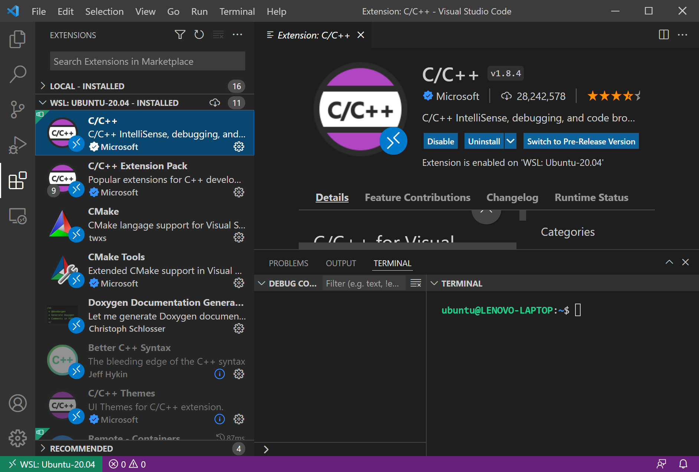

การติดตั้งและใช้งาน Pico SDK for RP2040 และ VS Code บน WSL 2 / Ubuntu#
▷ ซอฟต์แวร์สำหรับ Raspberry Pi Pico#
บอร์ด Raspberry Pi Pico มีชิป RP2040 SoC (Dual-core Arm Cortex-M0+) เป็นตัวประมวลผลหลัก และสามารถเขียนโปรแกรมได้หลายภาษา เช่น C/C++, Arduino Sketch, MicroPython / CircuitPython และ Embedded Rust เป็นต้น
บทความนี้นำเสนอขั้นตอนการติดตั้งและใช้งานซอฟต์แวร์สำหรับระบบปฏิบัติการ Windows 10 (64-bit) และใช้งานร่วมกับ WSL 2 (Windows Subsystem for Linux) และ Ubuntu Linux Distro (20.04.3 LTS) สำหรับการเขียนโปรแกรมด้วยภาษา C/C++
รายการซอฟต์แวร์ที่เกี่ยวข้อง
รูป: บอร์ด Raspberry Pi Pico - RP2040 (มุมมองจากด้านหน้า)
รูป: บอร์ด Raspberry Pi Pico - RP2040 (มุมมองจากด้านหลัง)

รูป: ตัวอย่างบอร์ดไมโครคอนโทรลเลอร์ที่ใช้ชิป RP2040 SoC เป็นตัวประมวลผลหลัก และมีราคาไม่แพง
▷ การติดตั้ง Remote WSL สำหรับ VS Code#
หากยังไม่เคยใช้งาน WSL มาก่อน ให้ติดตั้ง WSL Version 2 สำหรับระบบปฏิบัติการ Windows 10 หรือ Windows 11 แล้วติดตั้ง Linux Distro อย่างเช่น Ubuntu ตามลำดับ (ในบทความนี้ได้ทดลองใช้กับ Windows 10 (21H2) และติดตั้ง Ubuntu 20.04.3 LTS for WSL2)
เมื่อติดตั้งซอฟต์แวร์ให้พร้อมใช้งานได้แล้ว จะทำให้ผู้ใช้สามารถทำคำสั่งและใช้โปรแกรมต่าง ๆ ของ Linux ได้ใน Terminal ของ Ubuntu โดยมี Windows เป็น Host OS จากนั้นให้ติดตั้ง VS Code IDE สำหรับ Windows
รูป: ตัวอย่างการทำคำสั่งใน Powershell (Administrator) สำหรับอัปเดท WSL 2

รูป: การคำสั่งเพื่อแสดงรายการ Linux Distribution และสถานะการทำงานในขณะนั้น
ในลำดับถัดไปให้เปิดใช้งาน VS Code สำหรับ Windows และติดตั้ง VS Code Extension ที่มีชื่อว่า Remote WSL
รูป: Remote WSL Architecture (Source: Microsoft)
รูป: การติดตั้ง Remote WSL Extension สำหรับ VS Code IDE
เมื่อได้ติดตั้ง Remote WSL แล้วให้ปิดแล้วเปิด VS Code ใหม่อีกครั้ง ในตอนนี้ VS Code จะมีสองรูปแบบการใช้งานคือ Local (Windows) กับ Remote (Ubuntu)
เราจะใช้งาน VS Code IDE ให้เป็น Client เพื่อเชื่อมต่อกับ VS Code Server ซึ่งจะมีการติดตั้งโดยอัตโนมัติ ในครั้งแรกเมื่อเปิด Remote Windows เชื่อมต่อไปยัง WSL2 - Ubuntu (Remote Linux)
กดปุ่มสีเขียวมุมซ้ายล่างในหน้าต่าง VS Code เพื่อเชื่อมต่อ (Connect) และเปิดใช้งาน Open Remote Window
รูป: เปิดใช้งาน Open Remote Windows > New WSL Windows เพื่อให้ VS Code เชื่อมต่อกับ WSL2 / Ubuntu
การติดตั้ง VS Code Extensions ในขั้นตอนถัดไป จะนำไปใช้กับ WSL: Ubuntu 20.04
- C/C++ Tools
- C/C++ Extension Pack
- CMake Tools
รูป: การติดตั้ง C/C++ Tools, C/C++ Extension Pack และ CMake Tools
หรือจะใช้วิธีการทำคำสั่งสำหรับติดตั้ง Extensions ใน Bash Terminal ของ WSL2 Ubuntu ก็ได้
$ code --install-extension ms-vscode.cpptools
$ code --install-extension ms-vscode.cpptools-extension-pack
$ code --install-extension ms-vscode.cmake-tools

รูป: ตรวจสอบรายการ Installed Extensions ที่ได้ติดตั้งสำหรับ WSL: Ubuntu-20.04
▷ การติดตั้ง Pico C/C++ SDK สำหรับ WSL Ubuntu#
ให้เปิดใช้งาน Ubuntu App ของ Windows ซึ่งจะปรากฎหน้าต่าง Linux Terminal (Bash) แล้วทำคำสั่งต่อไปนี้ เพื่อดาวน์โหลดและติดตั้งไฟล์ต่าง ๆ ที่เกี่ยวข้องกับการใช้งาน Pico C/C++ SDK
ขั้นตอนที่ 1) ดาวน์โหลดไฟล์ของ Pico SDK และไฟล์โปรเจกต์ตัวอย่าง (Examples)
จาก Github repo ของ Raspberry Pi
โดยเลือกไดเรกทอรีสำหรับเก็บไฟล์ไว้ใน $HOME/pico (ภายใต้ไดเรกทอรีของผู้ใช้) ตามตัวอย่างต่อไปนี้
# create a new directory named 'pico' under the user's home directory
$ mkdir -p $HOME/pico
# change to the 'pico' directory
$ cd $HOME/pico
# clone the master branch of the Pico SDK from github
$ git clone -b master https://github.com/raspberrypi/pico-sdk.git
# change to the 'pico-sdk' subdirectory
$ cd pico-sdk
# install all submodules of the Pico SDK
$ git submodule update --init
# change the directory to `$HOME/pico`
$ cd ../
# clone the pico examples from github
$ git clone -b master https://github.com/raspberrypi/pico-examples.git
ชั้นตอนที่ 2) ประกาศตัวแปรสำหรับระบบ (Environment Variable) ใน Linux Terminal ดังนี้
$ export PICO_SDK_PATH=$HOME/pico/pico-sdk
ขั้นตอนที่ 3) ติดตั้งโปรแกรมต่าง ๆ สำหรับ Linux เช่น เพื่อใช้ในการคอมไพล์โค้ดสำหรับ Arm Cortex-M Series MCUs
$ sudo apt install git build-essential cmake gcc-arm-none-eabi \
libnewlib-arm-none-eabi libstdc++-arm-none-eabi-newlib
ลองตรวจสอบเวอร์ชันของโปรแกรม เช่น cmake และ arm-none-eabi-gcc
$ cmake --version
cmake version 3.16.3
...
$ arm-none-eabi-gcc --version
arm-none-eabi-gcc (15:9-2019-q4-0ubuntu1) 9.2.1 20191025 (release)
...
หากลองทำคำสั่ง tree เพื่อแสดงรายการไฟล์ภายในไดเรกทอรี จะได้ตัวอย่างของเอาต์พุตดังนี้
$ tree -L 2 $HOME/pico
├── pico-examples
│ ├── CMakeLists.txt
│ ├── CONTRIBUTING.md
│ ├── LICENSE.TXT
│ ├── README.md
│ ├── adc
│ ├── blink
│ ├── clocks
│ ├── cmake
│ ├── divider
│ ├── dma
│ ├── example_auto_set_url.cmake
│ ├── flash
│ ├── gpio
│ ├── hello_world
│ ├── i2c
│ ├── ide
│ ├── interp
│ ├── multicore
│ ├── pico_sdk_import.cmake
│ ├── picoboard
│ ├── pio
│ ├── pwm
│ ├── reset
│ ├── rtc
│ ├── spi
│ ├── system
│ ├── timer
│ ├── uart
│ ├── usb
│ └── watchdog
└── pico-sdk
├── CMakeLists.txt
├── CONTRIBUTING.md
├── LICENSE.TXT
├── README.md
├── cmake
├── docs
├── external
├── lib
├── pico_sdk_init.cmake
├── pico_sdk_version.cmake
├── src
├── test
└── tools
33 directories, 12 files
ขั้นตอนที่ 4) สร้างโปรเจกต์ใหม่ เช่น เก็บไว้ในไดเรกทอรี $HOME/pico/led_blink เพื่อทดลองคอมไพล์โค้ดภาษา C
# change to the '$HOME/pico' directory
$ cd $HOME/pico
# make a new directory for the project
$ mkdir -p led_blink && cd led_blink/
ขั้นตอนที่ 5) สร้างไฟล์ CMakeLists.txt ในไดเรกทอรีของโปรเจกต์ led_blink แล้วใส่เนื้อหาต่อไปนี้ แล้วบันทึกลงไฟล์
###############################################################
cmake_minimum_required(VERSION 3.13)
# initialize the SDK based on PICO_SDK_PATH
# note: this must happen before project()
include($ENV{PICO_SDK_PATH}/external/pico_sdk_import.cmake)
# Set name of project (as 'led_blink') and C/C++ standards
project(led_blink C CXX ASM)
set(CMAKE_C_STANDARD 11)
set(CMAKE_CXX_STANDARD 17)
# initialize the Raspberry Pi Pico SDK
pico_sdk_init()
# add the main.c file to the project
add_executable(${PROJECT_NAME}
main.c
)
# Add the pico_stdlib library
target_link_libraries(${PROJECT_NAME}
pico_stdlib
)
# Enable USB-serial output and disable UART for printf() output
pico_enable_stdio_usb(${PROJECT_NAME} 1)
pico_enable_stdio_uart(${PROJECT_NAME} 0)
# create map/bin/hex/uf2 file in addition to ELF (.elf).
pico_add_extra_outputs(${PROJECT_NAME})
###############################################################
ขั้นตอนที่ 6) สร้างไฟล์ main.c สำหรับโค้ดตัวอย่าง
#include <stdio.h>
#include "pico/stdlib.h"
const uint32_t LED_PIN = 25;
int main() {
// initialize LED pin
gpio_init( LED_PIN );
gpio_set_dir( LED_PIN, GPIO_OUT );
// initialize chosen serial port
stdio_init_all();
setup_default_uart();
while (true) { // loop forever
// blink the LED
printf( "Blinking!\r\n" );
gpio_put( LED_PIN, true );
sleep_ms( 100 );
gpio_put( LED_PIN, false );
sleep_ms( 100 );
}
return 0;
}
ขั้นตอนที่ 7) ทำคำสั่งเพื่อคอมไพล์โค้ด main.c ให้ได้ไฟล์ .elf (Executable and Linkable Format)
และ .uf2 (Microsoft USB Flashing Format) ตามลำดับ
# create a build subdirectory
$ mkdir -p ./build && cd ./build
# generate a native build environment
$ cmake ..
# build the target 'led_blink'
$ make led_blink
รูป: ตัวอย่างการทำคำสั่ง mkdir -p ./build && cd ./build และ cmake ..
รูป: ตัวอย่างการทำคำสั่ง make ในไดเรกทอรี led_blink/build
รูป: แสดงรายการไฟล์ในไดเรกทอรี led_blink/build ซึ่งจะมีไฟล์ led_blink.uf2
เมื่อทำขั้นตอน Build target โดยใช้คำสั่ง make ได้สำเร็จแล้ว จะได้ไฟล์เอาต์พุต
led_blink.uf2 ตามชื่อของโปรเจกต์ และสามารถนำไปใช้กับบอร์ด Raspberry Pi Pico ได้
ขั้นตอนที่ 8) อัปโหลดไฟล์ .uf2 ไปยังบอร์ด Pico โดยจะต้องทำให้บอร์ดนี้เข้าสู่โหมด BOOTSEL ก่อน
โดยการกดปุ่ม BOOT ค้างไว้ แล้วตามด้วยการกดปุ่มรีเซต (ถ้ามี) แล้วปล่อย
จากนั้นจะเห็นไดรฟ์ใหม่ที่มีชื่อว่า RPI-RP2 อาจจะตรงกับไดรฟ์ D: ในระบบไฟล์ของ Windows
ถ้าไม่มีปุ่มรีเซต ก็ให้กดปุ่ม BOOTSEL ค้างไว้ แล้วทำให้ขา RUN เปลี่ยนจากลอจิก Low
(ใช้สาย Jumper ต่อกับ GND) แล้วให้ High (ไม่ต้องต่อกับ GND) ตามลำดับ
จากนั้นให้ทำคำสั่งใน Ubuntu Terminal ดังนี้ (ในตัวอย่างนี้เป็นกรณีที่มองเห็นบอร์ด Pico
เชื่อมต่อกับไดรฟ์ D: ใน Windows)
# use the powersell.exe command to copy file to the RPI-RP2 driver (drive D)
$ powershell.exe copy ./led_blink.uf2 "D:"
หากทำได้สำเร็จ จะมองเห็น LED ที่อยู่บนบอร์ดกระพริบต่อเนื่องด้วยอัตราคงที่
นอกจากนั้นแล้วผู้ใช้จะมองเห็น พอร์ต Serial ที่เกิดจากการทำงานของบอร์ด Pico ผ่านทางพอร์ต USB
รูป: ตัวอย่างข้อความเอาต์พุตที่ได้รับผ่านทาง USB-Serial (CDC) ในโปรแกรม TeraTerm (เป็นตัวอย่างของซอฟต์แวร์โปรแกรมที่สามารถเขียนอ่านข้อมูลผ่านทาง Serial ได้)
▷ การใช้งาน VS Code + Remote WSL สำหรับบอร์ด Pico#
หลังจากได้ติดตั้งและใช้งาน Pico C/C++ SDK สำหรับ WSL - Ubuntu เพื่อใช้งานแบบ Command Lines แล้ว ถัดไปเป็นการสาธิตการใช้งานร่วมกับ VS Code
ในหน้าต่าง Linux Terminal ให้ย้ายไปทำคำสั่งในไดเรกทอรีของโปรเจกต์ pico/led_blink
ที่ได้สร้างไว้จากขั้นตอนที่แล้ว จากนั้นให้ทำคำสั่งต่อไปนี้
# remote the build subdirectory from the project
$ rm -fr ./build
# start VS Code IDE (remote) to open this directory
$ code .
จากนั้นจะมีการเปิดหน้าต่างใหม่ของ VS Code ใน Windows และในส่วนที่เป็น Explorer จะแสดงรายการไฟล์ต่าง ๆ ในโปรเจกต์ แล้วให้ลองทำขั้นตอน Build Target
รูป: การเปิดโปรเจกต์ตัวอย่าง pico/led_blink ใน VS Code IDE

รูป: ตรวจสอบตัวเลือกสำหรับคอมไพล์เลอร์ (Compiler / Toolchains) ที่จะใช้งาน
รูป: แสดงตัวอย่างการทำขั้นตอน Build เพื่อคอมไพล์โค้ดตัวอย่างและสร้างไฟล์เอาต์พุต .uf2
▷ กล่าวสรุป#
บทความนี้ได้นำเสนอขั้นตอนการติดตั้งซอฟต์แวร์ต่าง ๆ เช่น VS Code และ Pico C/C++ SDK สำหรับระบบปฏิบัติการ Windows ที่ทำงานร่วมกับ WSL 2 และ Ubuntu เพื่อนำมาใช้ในการเขียนและคอมไพล์โค้ดในภาษา C/C++ และทดลองใช้งานกับบอร์ดไมโครคอนโทรลเลอร์ RP2040 เช่น Raspberry Pi Pico
This work is licensed under a Creative Commons Attribution-ShareAlike 4.0 International License.
Created: 2022-02-21 | Last Updated: 2022-04-19